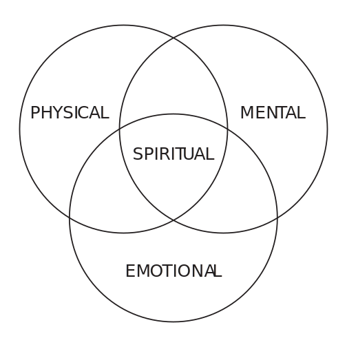

philosophy and spirituality
The number 4 has long held significance in the realms of philosophy and spirituality, symbolizing stability, balance, and completeness. Its presence in various philosophical frameworks and spiritual traditions underscores its universal role in shaping humanity’s understanding of the cosmos, the material world, and metaphysical realities. As a number connected to the essence of existence, the number 4 resonates across time and cultures, offering insight into the fundamental structures that govern life and thought.
Historical Foundations of the Number 4
The philosophical and spiritual significance of the number 4 finds its origins in ancient thought, where it was closely associated with the principles of order and harmony. In the Pythagorean school, numbers were considered the building blocks of reality, each possessing qualities and symbolic meanings. The number 4, represented by the tetrad—a triangular arrangement of four points—was regarded as sacred. For the Pythagoreans, it symbolized the cosmos’s inherent balance and completeness, embodying the harmony that underpins existence.
Plato expanded upon these ideas in his cosmological dialogue Timaeus, where he aligned the number 4 with the four classical elements: earth, air, fire, and water. These elements were viewed as the fundamental components of the material world, and their balance was essential to maintaining harmony. In this context, the number 4 became a framework for understanding the interplay of natural forces and the interconnectedness of all things.
Beyond Greek thought, the number 4 also played a central role in other philosophical traditions. For instance, in ancient Indian philosophy, the four states of consciousness—waking, dreaming, deep sleep, and transcendence—illustrate the number’s association with completeness and the cyclical nature of existence. These philosophical interpretations reveal the number 4’s enduring role in framing the natural and metaphysical order.
Philosophical Symbolism of the Number 4
The number 4 has been explored as a symbol of structure, organization, and harmony in philosophical discourse. Aristotle’s metaphysics provides insight into its symbolic power, connecting the number to principles of substance and causality. Aristotle viewed the number 4 as a representation of balance, emphasizing the interplay of opposites—form and matter, potentiality and actuality—that create unity in existence. This perspective reinforces the number’s role as a foundation for understanding the complexities of being and knowledge.
In moral philosophy, the number 4 takes on an ethical dimension through its association with the cardinal virtues: prudence, justice, temperance, and fortitude. These virtues represent essential pillars of moral conduct and societal stability, reflecting the balance and harmony needed for ethical living. The philosophical association of the number 4 with these virtues illustrates its role in guiding human behavior and fostering a just and equitable society.
Spiritual, Mystical, and Religious Interpretations
Spiritually, the number 4 embodies the principles of grounding, stability, and balance. Its symbolic resonance can be found in spiritual practices and cosmologies that emphasize the alignment of the material and metaphysical realms. In this context, the number 4 is often viewed as a foundation, akin to the four corners of a building or the four directions that orient human understanding of space.
The Kabbalistic concept of the Four Worlds—Atziluth, Beriah, Yetzirah, and Assiah—symbolizes the number 4 through its depiction of the divine process of creation. These worlds represent a progression from the highest spiritual plane (Atziluth) to the physical realm (Assiah), highlighting the interconnectedness of all existence and the balance between divine essence and material manifestation. This framework illustrates the philosophical importance of the number 4 as a structure that harmonizes the spiritual and material, reflecting stability, universality, and the transition from abstract principles to tangible reality.
In Chinese philosophy, the number 4 holds dual significance. It represents stability and completeness, as reflected in the four seasons and the four cardinal directions, which symbolize the cyclical nature of life and the harmony of the universe. However, the number also carries a cautionary undertone due to its phonetic similarity to the word for “death.” This duality underscores the number’s complex role in spiritual reflection, reminding practitioners of the interconnectedness of life and death and the importance of mindfulness.
In Western spiritual traditions, the number 4 is often associated with sacred geometry and the square, symbolizing the foundation of the material world and its connection to higher spiritual truths. This geometric representation highlights the balance between the earthly and the divine, emphasizing the need to cultivate stability and harmony in one’s spiritual journey.
The number 4 also finds significance in mystical traditions, where it represents the manifestation of the divine in the material realm. This is evident in the concept of the fourfold path in various spiritual teachings, which often include physical, emotional, mental, and spiritual dimensions of growth. [Fig. 4.10] Such frameworks underscore the number’s role in guiding individuals toward self-discovery and enlightenment.
Christian Religious Significance
The number 4 holds special importance in Christianity, where it symbolizes creation, completeness, and divine order. On the fourth day of creation, God established the sun, moon, and stars, marking the completion of the material universe and providing light to separate day from night (Genesis 1:14-19).
Christian theology also emphasizes the stability and universality of the number 4. The four Gospels—Matthew, Mark, Luke, and John—offer diverse perspectives on the life and teachings of Jesus Christ, presenting a comprehensive understanding of his ministry. The book of Revelation features four living creatures that symbolize the fullness of God’s creation and divine authority.
The Number 4 in Practice: Rituals and Symbolism
The practical application of the number 4 in spiritual rituals further illustrates its symbolic power. Many spiritual traditions incorporate the number in their practices to invoke balance and harmony. For example, meditation practices often emphasize the four elements or focus on the four cardinal directions to align the practitioner with the natural world. These rituals serve as a reminder of the interconnectedness of all things and the importance of maintaining equilibrium in both the physical and spiritual realms.
Philosophical traditions have similarly utilized the number 4 to frame intellectual inquiry and ethical reflection. The fourfold division of knowledge in classical philosophy—empirical, logical, ethical, and metaphysical—highlights the number’s role in organizing human understanding of the world. By exploring these dimensions, philosophers have sought to uncover the universal principles that govern existence.
The number 4 is a symbol of stability, balance, and completeness in both philosophy and spirituality. Its recurring presence in ancient thought and spiritual traditions underscores its universal significance as a representation of cosmic harmony and the interplay of opposites. Philosophically, it serves as a foundation for understanding the structure of existence and the ethical dimensions of human life. Spiritually, it offers a framework for grounding and alignment, guiding individuals on their journey toward self-discovery and enlightenment.
Mathematics and Science
The number 4 holds significant meaning in mathematics and science, symbolizing structure, stability, and interconnectedness. Its influence spans multiple disciplines, shaping foundational theories in arithmetic, geometry, and the physical sciences. By exploring the mathematical properties and scientific symbolism of the number 4, this article underscores its central role in both abstract thought and practical applications.
Mathematical Significance of the Number 4
In mathematics, the number 4 is the smallest composite number, expressed as 22, and the first square number, making it a cornerstone of number theory and arithmetic. Its inherent properties position it as a crucial bridge between simplicity and complexity, providing a basis for understanding numerical systems and geometric structures.
Arithmetic operations involving the number 4 highlight its consistency and foundational role in mathematics. The associative property ensures that grouping does not affect the result of addition or multiplication, as shown in (2 + 3) + 4 = 2 + (3 + 4). The identity properties, 4 + 0 = 4 and 4 × 1 = 4, demonstrate the stability of 4 in arithmetic systems.
The distributive property further illustrates its utility, enabling complex calculations to be simplified. For instance, 4 × (2 + 3) = (4 × 2) + (4 × 3), which breaks the operation into manageable parts: 8 + 12 = 20. These properties reflect the reliability and adaptability of 4, cementing its significance in both basic and advanced mathematical contexts.
Geometrically, the number 4 plays a pivotal role in defining shapes and spatial relationships. The square, with its four equal sides and angles, epitomizes balance and symmetry, serving as a fundamental element in planar geometry. Its extension into three dimensions forms the cube, a structure composed of six square faces. These geometric representations of 4 are critical in fields such as architecture, engineering, and theoretical mathematics, providing a framework for understanding space and structure.
The Four-Color Theorem, a landmark result in graph theory, demonstrates the sufficiency of 4 in complex systems. It states that any map can be colored with no more than four colors, ensuring that no two adjacent regions share the same color. The theorem, proven with the aid of computational methods, highlights the elegance and efficiency of the number 4 in mathematical reasoning.
Scientific Symbolism of 4
The number 4 resonates deeply within scientific principles, often symbolizing balance and interconnectedness. This is particularly evident in the four fundamental forces of nature—gravity, electromagnetism, the strong nuclear force, and the weak nuclear force—which govern all interactions in the universe. These forces define the behavior of everything from celestial bodies to subatomic particles, showcasing the role of 4 in maintaining cosmic stability.
In physics, the concept of spacetime further underscores the significance of the number 4. Combining three spatial dimensions with one temporal dimension, spacetime forms the foundation of Einstein’s theory of relativity. This four-dimensional framework has revolutionized our understanding of gravity, motion, and the structure of the universe, making the number 4 a critical representation of reality.
In chemistry, the tetrahedral geometry of carbon atoms illustrates the significance of 4 in molecular structures. This arrangement, in which a central carbon atom bonds to four other atoms, underpins the diversity and complexity of organic molecules, forming the chemical basis of life. The periodic table also reflects periodicity in chemical properties, often influenced by groupings of four elements.
Biology highlights the universality of 4 through its presence in DNA. The genetic code relies on four nitrogenous bases—adenine, thymine, cytosine, and guanine—which encode the instructions for life. This quartet underscores the number’s foundational role in biological systems, emphasizing its significance in the evolution and diversity of life. Additionally, processes like the cell cycle, with its four distinct phases, demonstrate how the number 4 governs essential mechanisms of life.
The Intersection of Mathematics and Science
The number 4 acts as a bridge between mathematics and science, linking abstract theory to tangible reality. In quantum mechanics, systems often rely on four-state models to describe particle behavior, reflecting the symmetry and balance inherent in the number. In engineering, the four-stroke engine cycle—comprising intake, compression, power, and exhaust—demonstrates the efficiency and precision of 4 in mechanical systems.
Higher-dimensional geometry provides another lens through which to view the versatility of 4. The tesseract, or four-dimensional hypercube, extends the properties of a cube into abstract spaces, offering insights into advanced mathematical and physical theories. This concept is particularly relevant in string theory and other attempts to unify the fundamental forces of nature.
Cultural Symbolism
Cultural and Spiritual Significance of 4
In various cultures and religions, the number 4 holds spiritual and symbolic significance. It is often associated with balance, stability, and a strong foundation, symbolizing harmony and order in both natural and spiritual realms.21 22 Across the world, the number 4 is revered and interpreted in diverse ways, reflecting unique cultural perspectives on its essence.
In many traditions, the number 4 represents completeness and structure, often tied to the natural world. For instance, the four cardinal directions—north, south, east, and west—form the foundation of navigation, while the four elements—earth, air, fire, and water—are considered the essential components of life. Time itself is frequently divided into cycles of four, including the four seasons and the four phases of the day: morning, noon, evening, and night. This universality underscores the number’s role as a cornerstone in human perception and understanding of the world.
The Number 4 in East Asian Cultures
In contrast to its positive connotations in many cultures, the number 4 is considered unlucky in East Asia, particularly in Chinese, Japanese, and Korean societies. This superstition, known as tetraphobia, stems from the phonetic similarity between the word for “four” and “death” in Chinese. This linguistic resemblance has fostered a deeply ingrained fear of the number, which has spread to Japan and Korea due to shared linguistic and cultural influences.
The manifestations of tetraphobia are extensive. In architecture, many buildings in East Asia omit the fourth floor entirely, skipping directly from the third to the fifth. Similarly, floors containing the digit 4, such as the 14th or 24th, are often excluded. In technology, companies frequently avoid incorporating the number 4 in product names, as evidenced by Nokia’s decision to omit 4 in its phone model numbers. In Japan, the number 49 is particularly dreaded, as it translates to “pain until death.” This fear influences everyday decisions, from hospital room assignments and license plates to consumer goods. For example, Alfa Romeo renamed its model 144 in Singapore to address concerns among superstitious buyers.
Beyond consumer goods and architecture, tetraphobia influences broader societal norms, including hospital room assignments, license plates, and phone numbers. Numbers containing 4 are often avoided in these contexts, as they are perceived to bring bad luck or negative energy. This avoidance underscores the impact of cultural superstitions, even in modern, urbanized societies.
Despite the advent of modernization and changing attitudes among younger generations, tetraphobia remains deeply embedded in the collective psyche of East Asian cultures. While some individuals, particularly younger people, may view these beliefs as outdated or superstitious, many still adhere to these practices out of respect for tradition or to avoid potential social disapproval. This enduring fear highlights the intersection of language, culture, and psychology in shaping societal norms and practices.
Positive Symbolism in Western Cultures
While East Asia views the number 4 with apprehension, many Western cultures associate it with stability, structure, and the physical world. In numerology, the number 4 symbolizes practicality, reliability, and a strong foundation, representing the material world through the four cardinal directions—north, south, east, and west.
In spiritual contexts, the number 4 signifies harmony and completeness, naturally reflecting the cyclical nature of life. The four seasons—spring, summer, autumn, and winter—illustrate the rhythms of growth and renewal, while the four phases of the day—morning, noon, evening, and night—structure daily activity and emphasize inherent order.
Beyond these temporal cycles, the number 4 also symbolizes the progression of life itself, often depicted in four distinct stages: infancy, youth, adulthood, and old age. These stages represent the journey of human existence, from the beginnings of life in infancy to the wisdom and introspection of old age. Each stage parallels the transitions seen in nature and time, reinforcing the idea that life is both structured and cyclical.
Additionally, the number 4 features prominently in Western religious and philosophical traditions. It is linked to the four classical elements—earth, air, fire, and water—which are considered the building blocks of the natural world. In Christianity, the number 4 is associated with creation and balance, represented by the four rivers of Eden and the four living creatures in the Book of Revelation.
The Number 4 in Ancient Civilizations
The number 4 has been a cornerstone of symbolic representation in ancient civilizations, deeply integrated into spiritual and practical worldviews. Native American cultures considered the number sacred, representing harmony and completeness through the four sacred mountains, colors, directions, and times of day. Their cosmology revolved around these elements, which framed their understanding of space and time.
Central to this belief system is the Four Directions Circle, a sacred symbol representing the interconnectedness of life. Each direction—north, south, east, and west—holds distinct spiritual and practical meanings, often linked to specific colors, animals, and elements. For instance, the east, symbolized by yellow, represents new beginnings and the rising sun, while the west, associated with black, signifies introspection and the setting sun. The circle itself represents unity and the cyclical nature of existence, emphasizing balance and harmony in both physical and spiritual realms. This framework guided ceremonies, rituals, and daily practices, embedding the number 4 into Native American cultural identity.
In Mesoamerican traditions, the deity Quetzalcoatl was closely associated with the number 4, reflecting its connection to the cardinal directions and the universe’s structure. Similarly, in ancient Egyptian culture, the number 4 symbolized balance and cosmic order. It was frequently incorporated into religious architecture, including temples and tombs, to enhance their spiritual significance.
Astrology and tarot
The number four holds significant meaning and symbolism in both astrology and tarot. It is regarded as a cornerstone of stability and structure, providing a foundation in various aspects of life. In tarot readings, the appearance of multiple fours typically signifies safety, security, and a situation that will eventually bring comfort, even if it does not seem so at present. Symbolically, the number four is expressed as a square, a geometric shape with four equal sides, reflecting the stability and balance it represents.
The Foundational Role of 4 in Astrology
The number four is pivotal in astrology, as it reflects the natural order and balance evident in the universe. It is represented by the four classical elements: Earth, Air, Fire, and Water. Each of these elements governs specific zodiac signs and encapsulates distinct energies.
Fire, associated with Aries, Leo, and Sagittarius, conveys dynamism, passion, and boldness. Individuals influenced by fire often exhibit adventurous and creative traits, making them natural leaders and innovators. Earth, connected to Taurus, Virgo, and Capricorn, represents groundedness, practicality, and reliability. This element embodies stability and the ability to build strong, enduring foundations in life. Air, governing Gemini, Libra, and Aquarius, signifies intellect, communication, and curiosity. It fosters analytical thinking, adaptability, and pursuit of knowledge. Water, associated with Cancer, Scorpio, and Pisces, symbolizes emotional depth, intuition, and nurturing energy. Those under influence navigate the complexities of emotion with empathy and understanding.
In addition to the elements, the four cardinal directions—north, south, east, and west—form an integral part of astrological symbolism. These directions function as a celestial compass, offering guidance and spiritual insight. North is often associated with wisdom and introspection, representing clarity, stability, and knowledge. The east symbolizes new beginnings and inspiration, while the south is linked to vitality and action. The west is tied to reflection and emotional connection, embodying energy of endings and relationships.
Astrologically, the number four is closely connected to Saturn, the planet that rules this number. Saturn symbolizes discipline, restriction, and structure, mirroring the number four’s focus on stability and strong foundations. It emphasizes the importance of hard work, patience, and responsibility in achieving lasting success. Through Saturn’s influence, the number four becomes a symbol of resilience and steady progress, guiding individuals toward personal and spiritual growth.
The significance of the number four in astrology extends beyond personality traits to patterns. Understanding interplay of elements and directions within an individual’s birth chart provides insights into strengths, weaknesses, and the potential for harmony or imbalance.
Stability and Structure: The Number 4 in Tarot
The number four holds a central role in tarot, where it represents stability, structure, and the establishment of foundations. This symbolism is most evident in The Emperor, the fourth card of the Major Arcana. Depicted as a stern figure seated on a throne, The Emperor embodies authority, control, and disciplined governance. The card serves as a reminder of the importance of leadership and setting boundaries to achieve stability in life.
Beyond The Emperor, the number four resonates throughout the tarot deck. Each suit of the Minor Arcana includes a card numbered four, which reinforces themes of structure and security. The Four of Cups often signifies introspection and emotional withdrawal, urging a reassessment of one’s priorities and desires. The Four of Pentacles highlights control and financial security, focusing on resource management and the need to establish a stable foundation. The Four of Swords represents rest and recovery, encouraging a pause to restore mental clarity. Lastly, the Four of Wands symbolizes harmony, celebration, and the building of strong personal or professional relationships.
In readings, the presence of multiple fours amplifies the themes of stability and consistency. This configuration reassures querents of a secure foundation and the potential for comfort and safety, even during periods of doubt or uncertainty. However, the number four also has a shadow side. Its association with structure can lead to stagnation, resistance to change, and fear of the unknown. This dual nature underscores its complexity and emphasizes the importance of adaptability within stability.
The number four’s astrological associations deepen its interpretation in tarot. Connected to Saturn and the sign of Cancer, the number represents both the restrictive yet strengthening energy of Saturn and Cancer’s nurturing qualities. Together, these influences highlight the interplay between discipline and emotional security in achieving stability.

[Fig. 4.10]
Diagram representing the concept of the fourfold path in spiritual teachings, encompassing the physical, emotional, mental, and spiritual dimensions of growth.
4